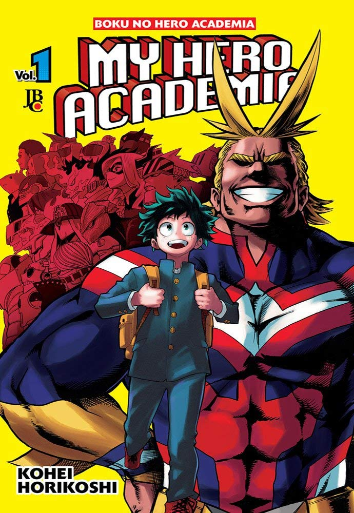

Bem vindo ao Mangás Life!!
Aqui você encontrará as maiores indicações para Mangás!!. Se sinta livre para escolher.
Solo Leveling

Dez anos atrás, depois do "Portal" que conecta o mundo real com um mundo de montros se abriu, algumas pessoas comuns receberam o poder de caçar os monstros do portal. Eles são conhecidos como caçadores. Porém, nem todos os caçadores são fortes. Meu nome é Sung Jin-Woo, um caçador de rank E. Eu sou alguém que tem que arriscar a própria vida nas dungeons mais fracas, "O mais fraco do mundo". Sem ter nenhuma habilidade à disposição, eu mal consigo dinheiro nas dungeons de baixo nível... Ao menos até eu encontrar uma dungeon escondida com a maior dificuldade dentro do Rank D! No fim, enquanto aceitava minha morte, eu ganhei um novo poder!
Kimetsu no Yaiba

O mangá conta a história de Tanjiro, o filho mais velho de uma família que é massacrada por um demônio e, a única sobrevivente do incidente foi umas das suas irmãs, que por causa do massacre acaba se transformando em um demônio. Então, o protagonista, Tanjiro, sai em uma jornada para tentar achar uma ''cura'' para a sua irmã...
Haikyuu!!
Hinata Shouyou, ao ver uma partida de voleibol, fica fascinado com "o Pequeno Gigante", um habilidoso jogador de vôlei, decidindo-se junta-se clube de vôlei de sua escola, no entanto ele é o único membro do clube. Após 3 anos ele finalmente completar o time e ruma para a disputa do Torneio de Primavera. No entanto seu primeiro oponente de cara é o preferido das finais. É neste momento que ocorre o encontro de Hinata com Kageyama Tobio, o "Rei da Quadra"!!!
Baby Steps
Maruo Eiichirou (Ei-Chan), um estudante de honra primeiro ano, um dia decide que ele está descontente com a forma como as coisas são e falta de exercício. Ele encontra um folheto de propaganda para o Clube de Tênis e decide dar uma olhada. Ele é imediatamente cativado por ela. Sem nenhuma experiência prévia e mau condicionamento físico, junte-se a Ei-Chan e como ele embarca em uma jornada de tênis usando sua inteligência, dedicação e ética de trabalho...
The Beginning After The End

Rei Grey conquistou força, riquezas e prestígio sem iguais em um mundo governado pela habilidade marcial. Entretanto, a solidão acompanha de perto aqueles de grande poder. Por detrás da máscara de um glorioso e poderoso rei, reside a casca vazia de um homem destituído de propósito e vontade. Renascido em um novo mundo repleto de magia e monstros, o Rei Grey terá a chance de refazer sua vida. Corrigir os erros do passado não será seu único desafio, pois um perigo oculto cresce a cada instante, ameaçando destruir tudo que ele trabalhou para criar, o fazendo questionar a verdadeira razão de ter recebido uma nova vida...
Boku no Hero Academia
A série conta a história de Midoriya Izuku, um garoto tímido e fraco cujo sonho é ser um herói. O problema é que ele vive num mundo repleto de pessoas com super poderes, mas ele mesmo não tem poder algum. No entanto, ele não desiste de seu grande sonho e fará de todo o possível para ser o maior herói que o mundo já conheceu!